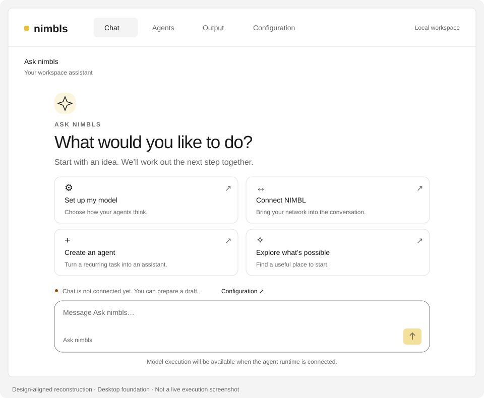
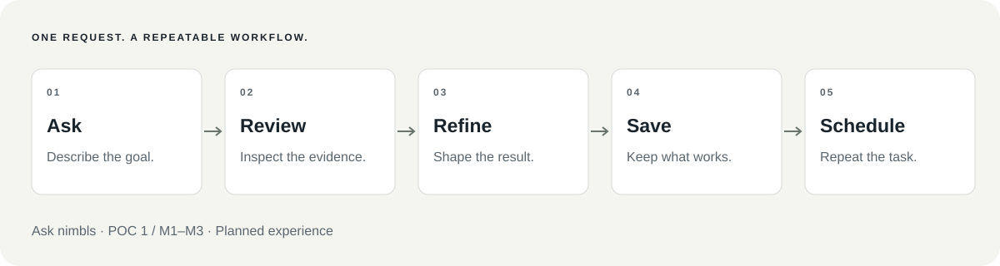
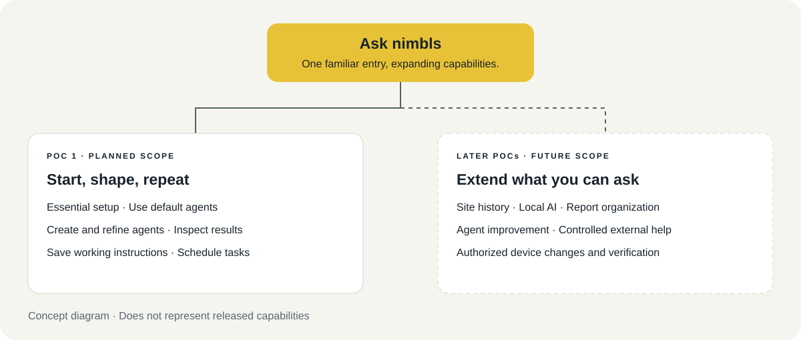

{kind=link}
{kind=link}
One place to ask.
Describe the outcome you need. Get help with essential setup and a useful agent to begin the work.
Your main assistant for turning everyday requests into useful, repeatable work.
Planned experience · Milestone 1 / Features 1–3

You shouldn’t need to learn every tool before getting started. Ask nimbls helps you use available capabilities, work with existing agents, or create one for a new task.
Describe the outcome you need. Get help with essential setup and a useful agent to begin the work.
Review the result and explain what should change. Refine the instructions through practical feedback.
Save the refined agent. Schedule recurring tasks once the results meet your needs.
Every morning, a network operator gathers logs, identifies important events, and prepares a summary for colleagues. Ask nimbls is designed to help turn that repeated effort into a reusable workflow.
“Help me review yesterday’s syslogs. Highlight important events and include the records behind your findings.”
What you need: a configured model, a working NIMBL connection, accessible syslogs, and a running application when scheduled work is due.
Ask nimbls helps identify the site and time range, checks essential setup, and uses the Daily Syslog Summary Agent.
Read key findings and supporting records. See which observations are confirmed and which questions remain open.
“Group repeated events and put the three most important findings first.” Review the revised report.
Keep the refined agent and its working instructions for future reports.
“Run this every morning at 8 a.m.” Review the timezone, next due time, and subsequent execution outcomes.

The outcome is a report with evidence, a saved way to produce it, and a visible result for each execution.
A previous report should never hide a failed run. Missing data and uncertain conclusions stay visible.
Download report template ↓Example Site · Yesterday · Execution status
Prioritized observations, separated from possible explanations.
Grouped events, counts, and relevant time ranges.
References to records supporting each finding.
Missing information and suggested next checks.
Ask nimbls starts with the daily reporting journey. Later capabilities extend what you can ask through the same familiar entry.

| Feature | Ask nimbls · Main Assistant |
|---|---|
| Slogan | Start with a request. Get work done. |
| Who it helps | People who want AI assistance without learning every tool, setting, or workflow first. |
| Problem | Work is spread across tools, setup steps, information gathering, and repeated manual actions. |
| Core benefit | One conversational entry to start work, shape the result, and make useful tasks repeatable. |
| First demonstration | Use a default agent to prepare a syslog summary, refine it, save the agent, and schedule the work. |
| Delivery | Introduced through Milestone 1 / Features 1–3. Later Milestones extend the available capabilities. |
Future examples: investigate past incidents, organize reports, review agent performance, and request controlled external help as those capabilities are delivered.
“Ask nimbls is the main entry to your AI workspace. Tell it what you want to achieve—for example, a daily network summary. It helps you start with a ready-to-use agent, review the result, and adjust how the work is done. Once you are happy with it, save the agent and schedule the task. The goal is to make useful work easier to start, improve, and repeat.”
Download sales explanation and demo script ↓| Time | Show | Explain |
|---|---|---|
| 0:00–0:30 | Enter the request. | Start with a goal. |
| 0:30–1:20 | Read the report and its sources. | Default agents deliver inspectable results. |
| 1:20–2:10 | Request and inspect a revision. | Shape the work through feedback. |
| 2:10–3:00 | Save the agent and set a schedule. | Repeat what works. |
Planned demonstration. These are presentation slots, not execution-speed claims. Identify any pre-run results or mockups clearly.
This page describes the planned experience. The desktop entry exists; the complete workflows shown here have not been validated end to end. No delivery date is committed by this page.
Tasks depend on supported tools, available data, model capabilities, and authorization. Ask nimbls does not bypass permissions or guarantee every task can be completed.
nimbls and Ask nimbls are provisional names. Illustrations show concepts, not product screenshots. Review draft 05 · September 21, 2026.
Browse every visual and read the sales materials here. Download individual assets for your presentations and proposals, or take the complete kit.
Sharing with your team? Download the ZIP, extract it, and double-click Start Website.command on macOS or Start Website.bat on Windows. Python 3 is required. Read the quick-start guide.
The current Chat layout, guidance cards, and composer.
Select the artwork to view it at full size.
Select the artwork to view it at full size.
Milestone 1 and the capabilities planned for later.
Select the artwork to view it at full size.
The shared visual identifier for Ask nimbls.
Select the artwork to view it at full size.
Positioning, benefits, and example requests.
Start with a request. Get work done.
English feature card · Review draft 01 · 2026-09-21
Status: Planned product experience, not an available-feature announcement. Ask nimbls and nimbls are provisional names. The desktop entry exists; the complete workflows below have not been validated end to end.
Ask nimbls is your main assistant for getting work done with nimbls. Describe your goal in everyday language. It helps you use the available tools, create and manage agents, and turn useful work into a repeatable routine.
Start with an included agent or describe a new task. Review the result, explain what you want changed, and save the working approach for next time. For recurring work, ask nimbls to help set up a schedule.
These examples describe intended capabilities; delivery scope is separated below.
| Your request | Intended outcome |
|---|---|
| “Summarize yesterday’s network events for this site.” | A readable summary with supporting syslog evidence and explicit information gaps. |
| “Create an agent that prepares this report every morning.” | An agent with a defined task, output, and schedule. |
| “Group repeated events and put the most important findings first.” | A revised report and a saved working approach for later runs. |
| “Help me configure nimbls and check what is missing.” | Guided setup using supported configuration and readiness checks. |
| “Review this agent’s recent work and suggest improvements.” | Evidence-based review and proposed changes, followed by comparison on representative cases. |
| “Archive older reports and keep important incidents easy to find.” | Reports organized according to defined archive and retention rules. |
Planned capabilities, not released functionality.
The full daily reporting story.
Planned experience; not a live case study.
Customer: A network operator who reviews site events each morning.
Starting point: The operator repeatedly gathers logs, identifies important events, and prepares a summary for colleagues.
Request: “Help me review yesterday’s syslogs for this site. Highlight important events and include the records behind your findings.”
Planned experience: Ask nimbls helps the operator use the included Daily Syslog Summary Agent, clarifies the necessary site and time scope, and initiates the work. The operator reviews the report, asks for repeated events to be grouped, and saves the refined agent. Once the result is satisfactory, the operator requests a daily schedule.
Deliverable: A daily report with the reviewed scope, key findings, source references, and missing information. Scheduled execution has its own visible outcome; an older report must not hide a failed run.
Prerequisites: A configured model, a working NIMBL connection, accessible syslog data, and a running application when scheduled work is due.
A short pitch and a three-minute walkthrough.
Planned experience; not a validated live demonstration.
“Ask nimbls is the main entry to your AI workspace. Tell it what you want to achieve—for example, a daily network summary. It helps you start with a ready-to-use agent, review the result, and adjust the way the work is done. Once you are happy with it, save the agent and schedule the task. The goal is simple: make useful work easier to start, improve, and repeat.”
This is a planned demo script, not evidence of a working demonstration. Use a validated environment for a live demo; label any mockup as illustrative.
| Time | Demonstration | Point to communicate |
|---|---|---|
| 0:00–0:30 | Open Ask nimbls and request yesterday’s site summary. | Start with a goal in everyday language. |
| 0:30–1:20 | Use the included agent and inspect its report and source references. | Ready-to-use agents provide a starting point; results have evidence. |
| 1:20–2:10 | Ask to group repeated events and prioritize important findings; inspect the revision. | Shape the work through feedback. |
| 2:10–3:00 | Save the refined agent and configure a daily schedule; show the next due time. | Turn an accepted result into repeatable work. |
Actual execution time depends on the environment. Use clearly identified pre-run results when necessary; the script is not a performance claim.
An editable report structure with no live data.
Illustrative report template — not live customer data.
Site: [site name] Period: [start–end, timezone] Execution: [status and time]
[Prioritized observations. Separate confirmed facts from possible explanations.]
[Grouped events, counts, and time ranges.]
[Source record references for each finding.]
[Missing information and suggested checks.]
All copy, visual direction, and scope notes.
Start with a request. Get work done.
English feature card · Review draft 01 · 2026-09-21
Status: Planned product experience, not an available-feature announcement. Ask nimbls and nimbls are provisional names. The desktop entry exists; the complete workflows below have not been validated end to end.
Ask nimbls is your main assistant for getting work done with nimbls. Describe your goal in everyday language. It helps you use the available tools, create and manage agents, and turn useful work into a repeatable routine.
Start with an included agent or describe a new task. Review the result, explain what you want changed, and save the working approach for next time. For recurring work, ask nimbls to help set up a schedule.
These examples describe intended capabilities; delivery scope is separated below.
| Your request | Intended outcome |
|---|---|
| “Summarize yesterday’s network events for this site.” | A readable summary with supporting syslog evidence and explicit information gaps. |
| “Create an agent that prepares this report every morning.” | An agent with a defined task, output, and schedule. |
| “Group repeated events and put the most important findings first.” | A revised report and a saved working approach for later runs. |
| “Help me configure nimbls and check what is missing.” | Guided setup using supported configuration and readiness checks. |
| “Review this agent’s recent work and suggest improvements.” | Evidence-based review and proposed changes, followed by comparison on representative cases. |
| “Archive older reports and keep important incidents easy to find.” | Reports organized according to defined archive and retention rules. |
Customer: A network operator who reviews site events each morning.
Starting point: The operator repeatedly gathers logs, identifies important events, and prepares a summary for colleagues.
Request: “Help me review yesterday’s syslogs for this site. Highlight important events and include the records behind your findings.”
Planned experience: Ask nimbls helps the operator use the included Daily Syslog Summary Agent, clarifies the necessary site and time scope, and initiates the work. The operator reviews the report, asks for repeated events to be grouped, and saves the refined agent. Once the result is satisfactory, the operator requests a daily schedule.
Deliverable: A daily report with the reviewed scope, key findings, source references, and missing information. Scheduled execution has its own visible outcome; an older report must not hide a failed run.
Prerequisites: A configured model, a working NIMBL connection, accessible syslog data, and a running application when scheduled work is due.
“Ask nimbls is the main entry to your AI workspace. Tell it what you want to achieve—for example, a daily network summary. It helps you start with a ready-to-use agent, review the result, and adjust the way the work is done. Once you are happy with it, save the agent and schedule the task. The goal is simple: make useful work easier to start, improve, and repeat.”
This is a planned demo script, not evidence of a working demonstration. Use a validated environment for a live demo; label any mockup as illustrative.
| Time | Demonstration | Point to communicate |
|---|---|---|
| 0:00–0:30 | Open Ask nimbls and request yesterday’s site summary. | Start with a goal in everyday language. |
| 0:30–1:20 | Use the included agent and inspect its report and source references. | Ready-to-use agents provide a starting point; results have evidence. |
| 1:20–2:10 | Ask to group repeated events and prioritize important findings; inspect the revision. | Shape the work through feedback. |
| 2:10–3:00 | Save the refined agent and configure a daily schedule; show the next due time. | Turn an accepted result into repeatable work. |
Actual execution time depends on the environment. Use clearly identified pre-run results when necessary; the script is not a performance claim.
Icon concept: A speech bubble with a small action arrow, communicating conversation that initiates work. Use a simple, consistent icon style across the capability set; this is an art direction, not a finished icon.
Feature illustration: Show an illustrative Ask nimbls conversation beside the headline: a concrete network-summary request, an evidence-backed report with explicitly synthetic content, and a follow-up asking to preserve the format and schedule the task. Present it as a concept interface, not a product screenshot. The compact split layout brings the result into the first viewport. Do not imply that a chat message bypasses permissions or missing prerequisites.
Illustration caption: “Describe the goal. Shape the result. Repeat what works.”
| Scope | Positioning |
|---|---|
| Milestone 1 / Features 1–3 | Introduce Ask nimbls through the default syslog agent and the create, try, refine, save, and schedule journey. Essential setup supports that journey. |
| Later Milestones | Extend the same entry to site history, local-model workflows, report organization, agent improvement, controlled external assistance, and verified device changes as those capabilities are delivered. |
| Long-term product principle | All supported nimbls application operations should be accessible through agent-facing operations, so Ask nimbls can help users operate the product. This does not promise support for every conceivable task. |
Use “main assistant,” “ready-to-use agents,” and “repeatable work” consistently. Describe demonstrated scope explicitly. Do not claim autonomous self-improvement, guaranteed accuracy, or completed tasks without checking the actual result.
Related: Milestone milestones and future features · Milestone specification. The seven-Milestone sequence is recorded in the roadmap; no new delivery dates are assigned.
SVG files scale without losing quality. Markdown files contain editable text. Keep planned-feature labels and provisional naming when reusing these materials.
Download this HTML page ↓For website placement or offline use with artwork, use the complete ZIP: it includes this page and its assets together.
Ask about site changes, check agent results, and request an investigation.
{kind=link}
{kind=link}
{kind=link}
{kind=link}
{kind=link}
{kind=link}